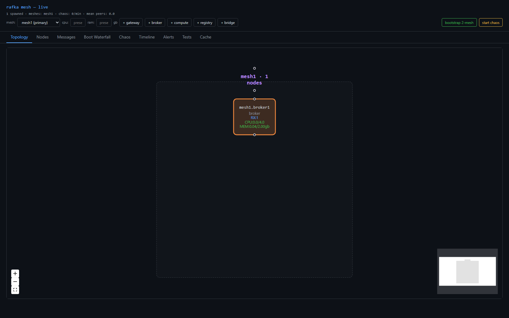
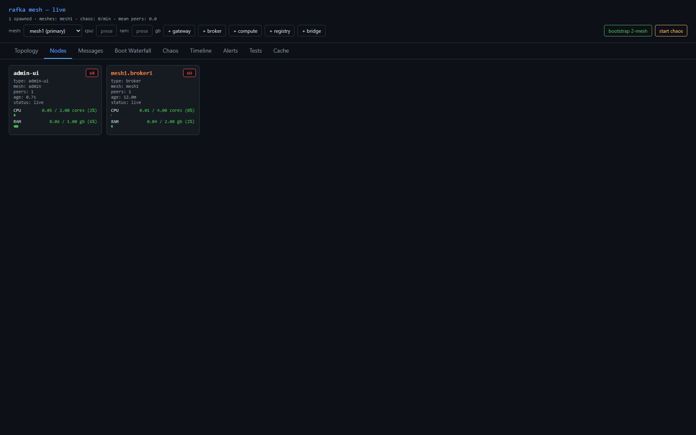
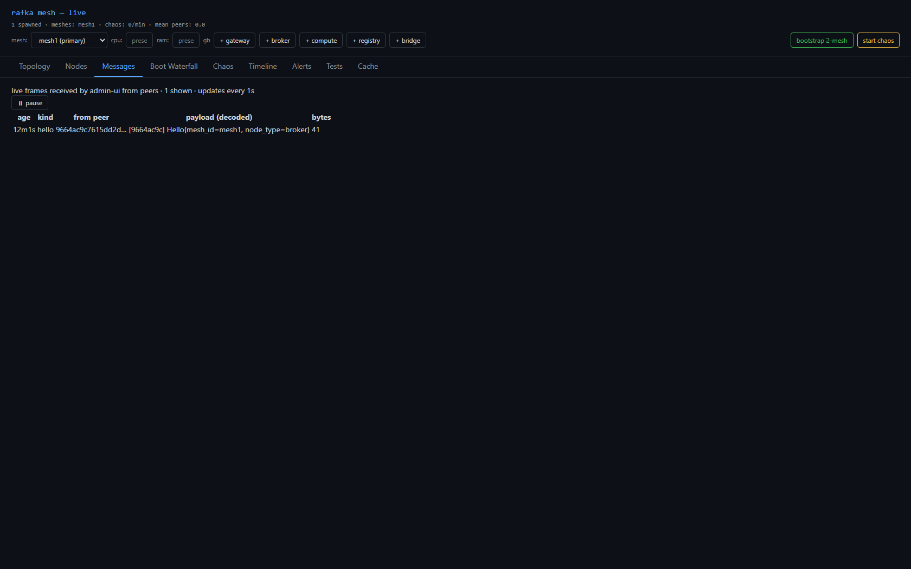
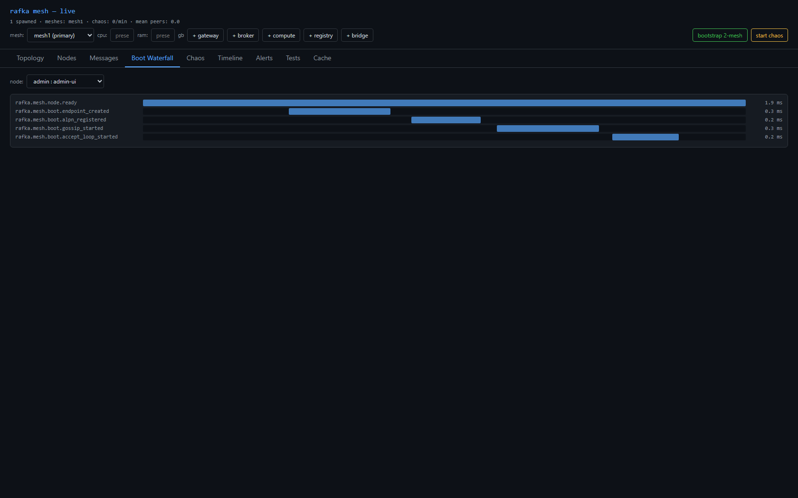
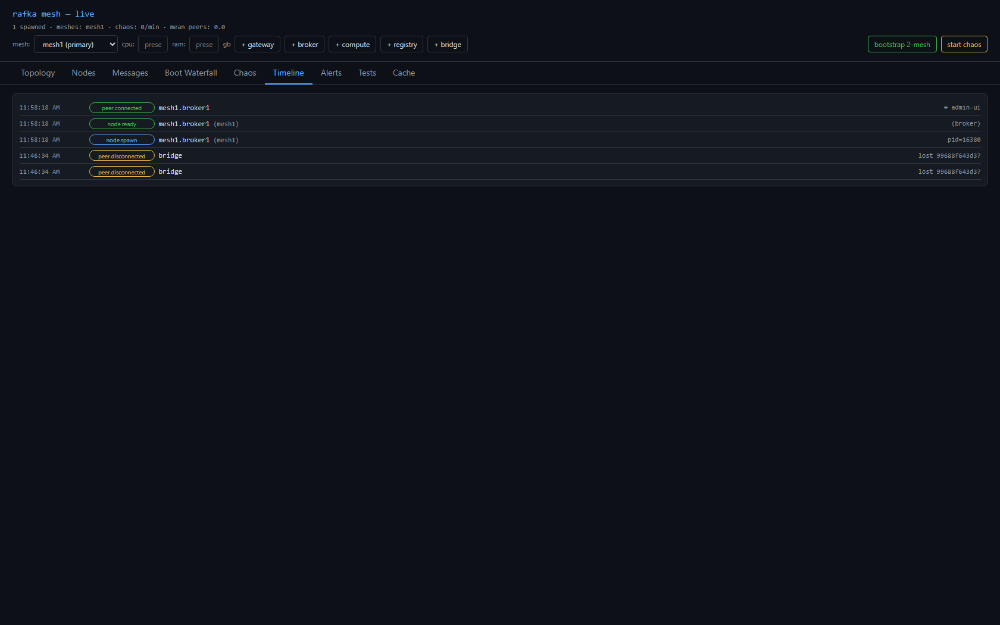
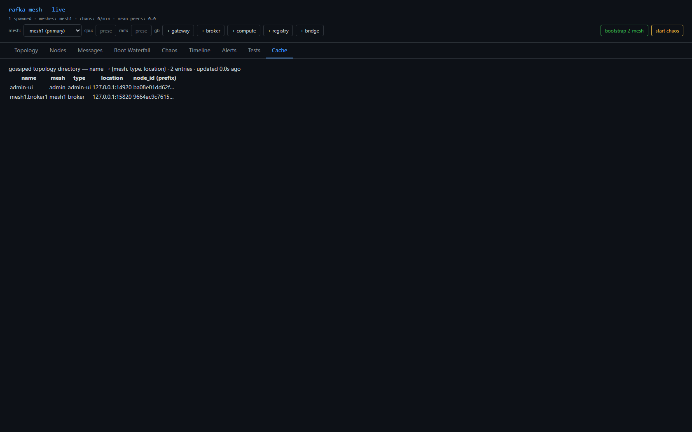
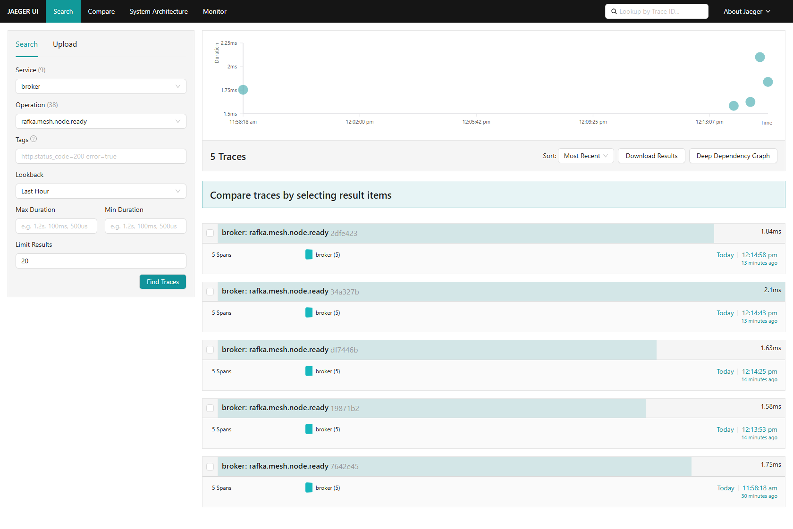
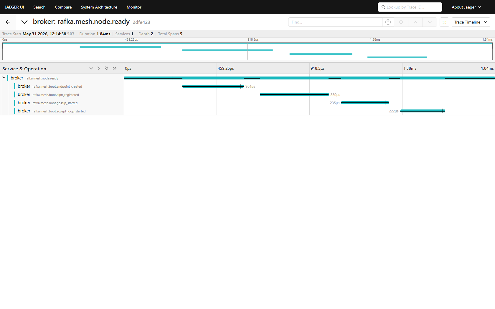

A single, deterministically-named broker (mesh1.broker1) can be spawned from the admin-ui
and is visible live across every surface, including a new Cache view, with its boot
telemetry flowing to Jaeger.
<mesh>.<role><N> → mesh1.broker1 (per-mesh/per-role counter via RAFKA_NODE_NAME).GossipDigest.location — node's reachable bind address, broadcast in gossip.GET /api/topology-cache — directory name → {mesh,type,location} from live_digests() (real gossip, not hardcoded).cargo check --workspace --tests --no-default-features → 0 errors, 0 warnings.:19091/api/topology-cache → live JSON, mesh1.broker1 @ 127.0.0.1:15820.handle_topology_cache + GossipDigest.location — genuinely gossip-derived.mesh1.broker1 live across all surfaces







| Criterion | Result |
|---|---|
| cargo check clean (0/0) | ✅ |
| +broker → mesh1.broker1 in all 5 surfaces + Cache | ✅ |
| /api/topology-cache returns live gossip-derived entry | ✅ |
| UI screenshots in sprint folder | ✅ |
| Jaeger telemetry screenshot in sprint folder | ✅ |
| Team lead personally verified screenshots | ✅ |